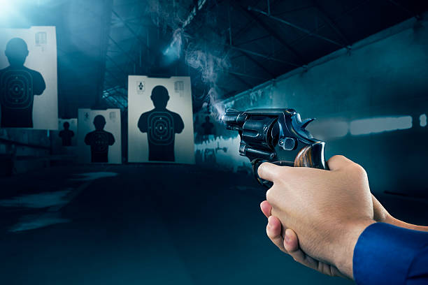

History of Shooting
Shooting sports date back centuries, originating as military and hunting practices. Organized competitive shooting began in the 19th century. It was first included in the modern Olympic Games in 1896, making it one of the oldest Olympic disciplines.
Rules & Equipment
- Disciplines include rifle, pistol, and shotgun events
- Targets vary in size and distance; scoring depends on accuracy
- Governing body: ISSF (International Shooting Sport Federation)
- Athletes must wear safety gear and use specialized firearms
- Electronic scoring systems are used in competitions
Major Shooting Competitions
- Olympic Games
- ISSF World Championships
- Asian & European Shooting Championships
- Commonwealth Games
- World Cups and Continental Cups
Famous Shooters
- Abhinav Bindra (India) – Olympic gold in 10m air rifle
- Jin Jong-oh (South Korea) – multiple Olympic golds
- Kim Rhode (USA) – six Olympic medals in shotgun
- Rajmond Debevec (Slovenia)
- Xu Haifeng (China) – China’s first Olympic gold medalist
Benefits of Shooting
- Improves focus and concentration
- Enhances hand-eye coordination and motor skills
- Promotes mental discipline and patience
- Reduces stress through deep breathing techniques
- Develops self-control and calmness under pressure
Global Popularity
Shooting is practiced in over 100 countries and continues to grow. It's not just a competitive sport but also a recreational activity. Olympic exposure and national training academies have boosted its popularity in many nations.